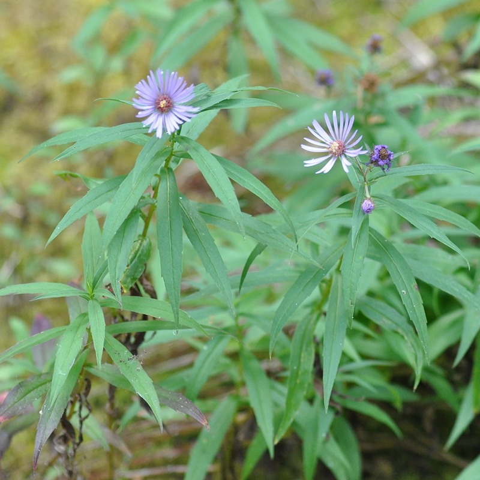
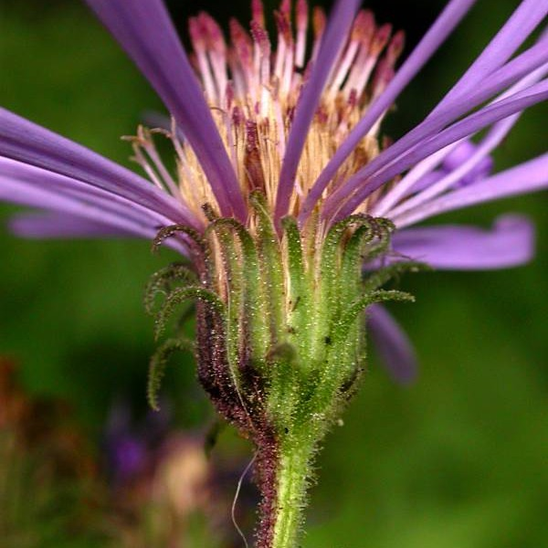
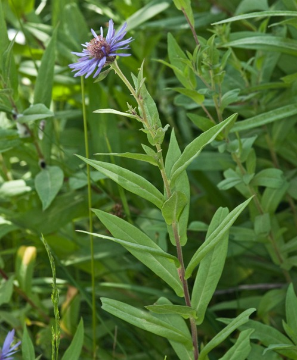

Canadanthus modestus
- Common names
- Great Northern Aster
giant mountain aster
- Family
- Asteraceae
- Family common name
- Sunflowers, Daisies, Asters, and Allies Family
- Blooms
- June - October
- Habitat
- Moist, shady woods, along streams at low to mid elevations.
- Recognition
- Single tall stem, often branched at top. Basal leaves slightly smaller than the rest, withering by bloom time; stem leaves lance-shaped, clasping, 2 - 6 in. long, entire or with few sharp teeth. One to many flower heads atop stems. Flower heads with 21-45 very narrow purple ray flowers, yellow disk; cup green. glandular, narrowly linear bracts with spreading tips.
Range Map
OR Flora